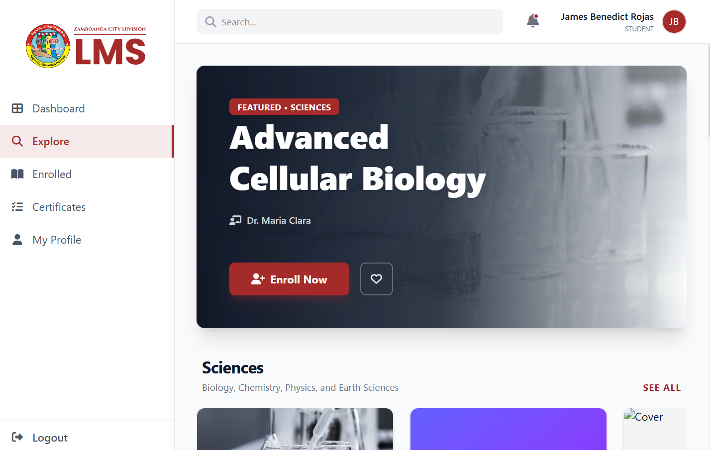
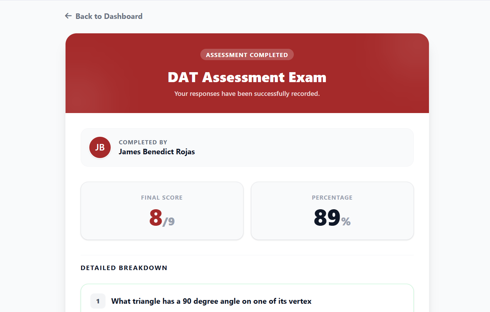
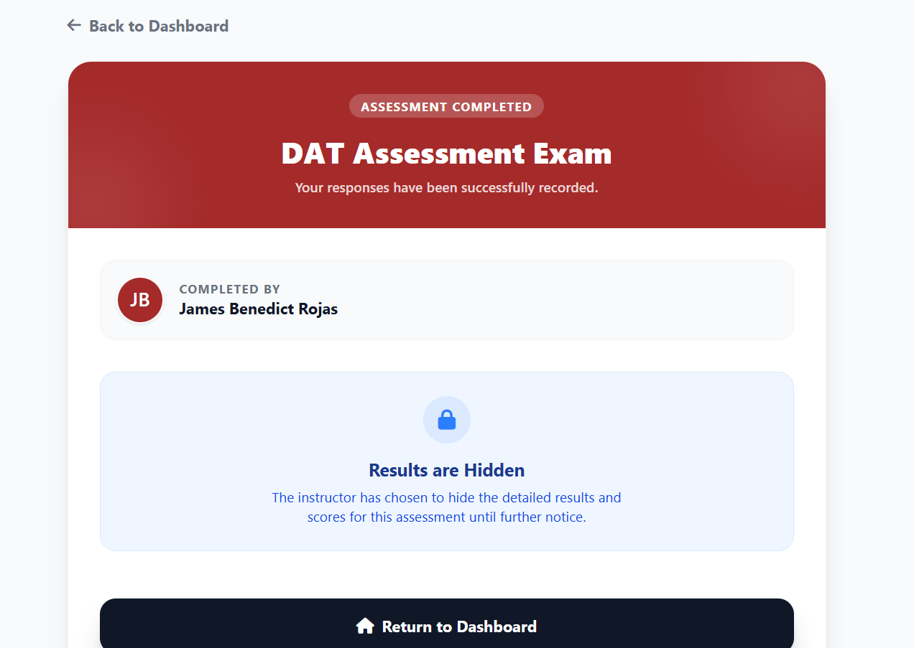

Refining Student Experience & Assessment Analytics
JB
James Benedict
March 17, 2026
Week 4
During the fourth week of my internship, we achieved a significant milestone, reaching 40% completion of the Learning Management System (LMS) project. My primary focus was on refining the student-facing modules. I designed the Explore Page template and implemented critical optimizations to our Computer-Based Assessment (CBA) system. To enhance the professional feel of the platform, I replaced standard, intrusive browser alerts with clean, custom Modals, providing a much smoother experience for students during their exams.

On the backend, I implemented table pagination for our school, teacher, and student directories, which significantly improved data loading speeds and administrative navigation. I also successfully developed the Student Assessment Result page, allowing users to clearly review their performance. During this implementation, I resolved critical backend bugs—including a persistent score miscount error and a failure in saving exam data—ensuring 100% data integrity for future assessments.


We did face a technical roadblock early in the week due to environment misconfiguration—using `npm run build` instead of `npm run dev`—which disabled JavaScript components and caused Vite failures. After conducting a root-cause analysis and re-initializing our Node modules, we restored full system stability and interactive functionality.
This week reinforced that UX refinements and stable development environments are essential for delivering production-ready software. Mastering Vite and NPM management has been a valuable technical gain, helping me better manage the complexity of full-stack development as we move toward the next phase of the project.